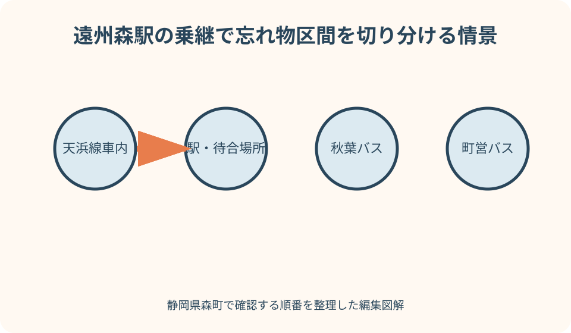
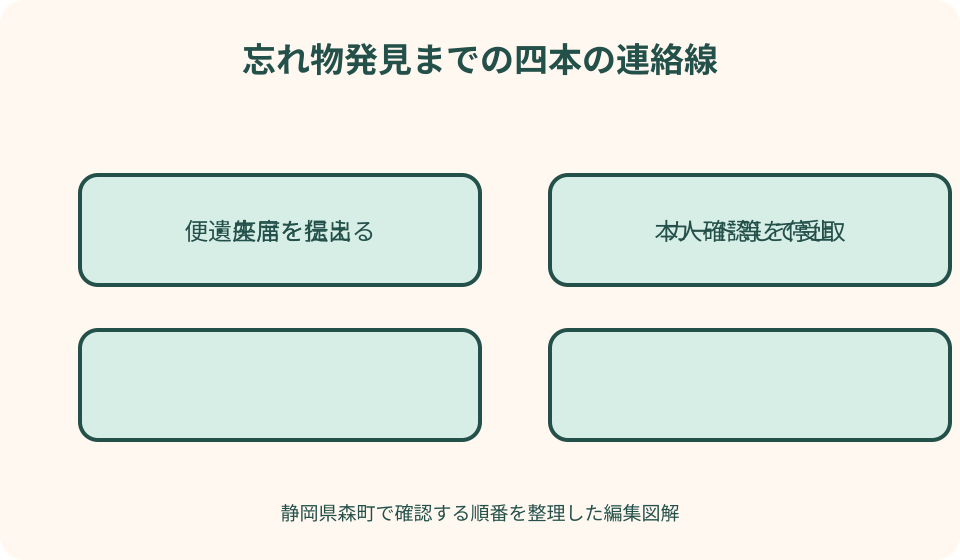

交通・外出・生活動線｜最終確認 2026-08-10
静岡県森町の電車・バスで忘れ物｜運行者・カード停止・警察への連絡順
電車やバスを降りた後に荷物がないと気づいたら、探し回る前に『どの運行者の、どの便で、どこに置いた可能性があるか』を固定します。静岡県森町には天竜浜名湖鉄道、秋葉バス、森町営バスなどがあり、同じ遠州森駅周辺を通っても連絡先は同じではありません。財布や携帯電話なら、運行者への照会とカード・回線の停止も並行します。

編集イラスト忘れ物に気づいた直後の結論
最初の行動は、線路沿いや車道へ戻ることではなく、安全な場所で移動履歴を止めることです。乗った列車・バス、降りた時刻、座っていた位置、最後に品物を見た場面を、記憶が新しいうちにスマートフォンや紙へ書きます。焦って次々に電話すると、異なる説明を残して照合しにくくなります。
次に、交通手段の運行者を特定します。天浜線は天竜浜名湖鉄道、秋葉線・秋葉中遠線などは秋葉バス、町営バス大河内線・吉川線は森町が案内する路線です。遠州森駅で乗り継いだ場合は、列車内、駅、バス車内、停留所のどこでなくしたかにより連絡先を分けます。
財布、キャッシュカード、クレジットカード、携帯電話が入っていた場合は、運行者からの発見連絡だけを待ちません。警察庁は、カード発行元や携帯電話会社へ連絡し、利用停止などを行うよう案内しています。交通事業者への照会、カード停止、警察への届出を別の担当に分けると早く動けます。
この記事の確認日は2026年8月10日です。忘れ物の受付先、営業時間、保管場所、受取条件は変わることがあります。電話番号やフォームは連絡する当日に各運行者の公式ページで確認し、本人確認や発送の可否を記事だけで決めないでください。
乗った交通機関を時系列で再現する
問い合わせ前に、出発駅・停留所、乗車時刻、行先、降車駅・停留所、乗換場所を一列に書きます。時刻表の予定だけでなく、実際に乗った時刻を思い出します。遅延、乗り遅れ、予定外の途中下車があれば、その差が車両の特定に役立ちます。
天浜線では、掛川方面か新所原方面か、何駅から何駅まで乗ったかを確認します。列車番号が分からなくても、乗車駅、発車のおおよその時刻、行先表示、車両の両数、進行方向に対する座席位置を伝えられれば、運行者が対象を絞る材料になります。
バスでは、路線名、行先、乗車・降車停留所、整理券番号、支払方法、降車時刻を確認します。秋葉バスと町営バスを乗り継いだ場合は、『森町のバス』と一括りにせず、どちらの車内で最後に品物を見たかを分けます。レシートや乗換検索の履歴も補助になります。
家族送迎や徒歩を挟んだときは、車内だけでなく駅前、待合場所、停留所のベンチ、送迎車内も候補にします。ただし、人や車が動く場所を自分で長時間捜索するより、施設や運行者へ時刻と場所を伝えることを優先します。
品物の特徴は第三者が照合できる形にする
『黒いバッグ』だけでは似た品物と区別できません。大きさ、素材、メーカー、取っ手、ファスナー、傷、キーホルダー、内側の色を挙げます。外から見えない特徴を一つ含めると、所有者確認の手掛かりになります。
財布なら色・形・ブランドに加え、中にあるカードの種類、名義、現金のおおよその内訳を整理します。カード番号や暗証番号を交通事業者へ不用意に伝える必要はありません。照合に必要な範囲を相手に尋ね、秘密情報をメール本文へ丸ごと書かないようにします。
携帯電話ならメーカー、機種、色、ケース、待受画面、ストラップ、端末固有の特徴を記録します。端末のロック解除番号を伝えるのではなく、自分が所有者だと示せる契約情報や端末番号を通信会社の案内に従って用意します。遠隔ロックや位置情報の利用は、サービス提供元の公式手順で行います。
傘、衣類、買い物袋は記名がなく似た物が多いため、購入店、柄、ほつれ、中身、畳み方など細部を思い出します。警察庁も、日時・場所、記名や個別番号、色・形などの特徴が照合に重要だと案内しています。写真があれば、撮影日時と現物の状態が分かるものを選びます。
天浜線の列車内・駅でなくした場合
天浜線で忘れた可能性が高いときは、天竜浜名湖鉄道の公式問い合わせ先を確認します。同社の問い合わせフォームは返信に数営業日かかる場合があり、急ぎは電話で問い合わせるよう案内しています。カードや鍵など急ぐ物は、フォームの返信待ちだけにしません。
連絡時には、利用日、乗車駅、乗車時刻、降車駅、列車の行先、車内の位置を伝えます。『遠州森駅を利用した』だけでは、列車内か駅構内か、どちらの方向かが分かりません。最後に品物を見た駅と、紛失に気づいた駅も分けます。
遠州森駅や円田駅など駅周辺でなくした場合は、その場所の管理者がどこかを天竜浜名湖鉄道へ確認します。駅が有人か無人かを過去の記憶で判断し、現地へ行けば職員がいると思い込まないようにします。問い合わせ当日の駅情報と受取案内を使います。
列車はその後も運行を続けるため、拾得物が降車駅に残るとは限りません。見つかったとの連絡を受けたら、現在の保管場所、受取時間、本人確認書類、代理人や発送の扱いを聞いてから移動します。遠州森駅へ戻れば必ず受け取れるとは考えません。
秋葉バスの車内・停留所でなくした場合
秋葉バスを利用した場合は、同社公式サイトで最新の連絡先を確認します。森町公式の交通リンク集も、秋葉バスのホームページ、時刻表、運賃、路線図への入口を示しています。町役場へ車内捜索を依頼するのではなく、まず運行事業者を特定します。
路線名が分からなければ、乗った停留所、降りた停留所、行先表示、時刻、運賃、乗車位置を伝えます。遠州森町本社付近を通ったという情報だけでは、便を一つに絞れないことがあります。乗換アプリの検索履歴や家族へ送った到着連絡も時刻確認に使えます。
座席は、前方・中央・後方、左右、窓側・通路側、優先席付近など、車内を区画に分けて説明します。降車直前に立った場所、運賃箱付近、荷物棚や足元も候補です。車両番号を覚えていなくても、見た特徴を事実と推測に分けて話します。
停留所でなくした可能性がある場合は、停留所設備の管理者や周辺施設へ確認すべきかを秋葉バスへ尋ねます。交通量のある道路へ出て探したり、営業所へ連絡せずに突然受取へ向かったりせず、保管の有無と訪問先を確定します。
森町営バスは路線名と運行日から確認する
森町営バスには大河内線と吉川線があり、森町公式が時刻表や利用方法を案内しています。町営バスで忘れた場合は、秋葉バスの車内として連絡せず、乗った路線名と便を森町の公式案内から確認します。
吉川線でアクティ森方面へ向かった、大河内線で三倉方面を利用した、という地名の情報は便の特定に役立ちます。乗車停留所、降車停留所、時刻、予約の有無、乗り継いだ路線を一緒に伝えます。過去の時刻表ではなく利用日の版を見ます。
町営バスの忘れ物をどの担当が受け付け、車内確認を誰が行うかは、森町公式ページにある問い合わせ先へ確認します。町営だから役場のどの窓口でも扱えるとは限りません。夜間や休日に気づいた場合の連絡方法も、その場で推測せず公式案内に従います。
町営バスから天浜線や秋葉バスへ乗り継いだ場合、最初の事業者で見つからなくても次の交通機関へ同じ内容を転送するだけでは不十分です。それぞれの乗車区間、座席、最後に品物を確認した時刻を変えて説明し、照会記録を別々に残します。
駅・停留所と車内を同じ場所として扱わない
列車を降りて駅のベンチへ置いたなら、車内忘れ物とは拾得経路が違います。バスを待つ間に停留所で落とした場合も同様です。乗り物の管理者、駅施設の管理者、道路上の拾得物を扱う警察のどこへつながるかを、最後に見た場所から判断します。
乗換時に遠州森駅周辺の店、トイレ、駐車場へ立ち寄った場合は、施設名と滞在時刻を追加します。『駅でなくした』という申告だけでは、鉄道会社が管理しない場所まで含まれる可能性があります。位置情報や決済履歴で立寄先を再現します。
施設に管理者がいる場所でなくしたと考えられる場合、警察庁はその施設管理者にも届いていないか確認するよう案内しています。運行者への照会と警察への遺失届は排他的ではありません。施設で見つからないことが警察への届出条件になるとも限りません。
線路内、車道、バスの折返し場所など立入りが危険または禁止される場所へ、自分で取りに入らないでください。見える位置に品物があっても、運行者や警察へ場所を伝えます。物を取り戻すために交通事故や運行支障を起こさないことが最優先です。

カード・携帯電話・鍵は照会と停止を並行する
キャッシュカードやクレジットカードをなくしたら、発行会社の公式紛失窓口へ連絡します。交通事業者が車内を確認している間にも不正利用の危険は残ります。家族がカード裏面の電話番号を調べる場合も、検索広告ではなく発行会社公式サイトを使います。
交通系カードや電子マネーは、記名式か無記名か、残高、定期券機能、会員登録の有無で対応が違います。森町内で使った交通機関がそのカードを扱っていたかとは別に、発行元へ停止や再発行の条件を確認します。拾得連絡が来ても、停止解除できるとは限りません。
携帯電話は、通信会社への回線停止、端末メーカーやOS提供者の紛失機能、決済サービスの停止を分けます。位置情報が表示されても、自分で他人の家や危険な場所へ取りに行かず、警察へ相談します。画面ロックの暗証番号を拾得者や運行者へ伝えません。
家の鍵や車の鍵を住所が分かる物と一緒になくした場合は、帰宅方法と防犯を家族で決めます。鍵が見つかるまで玄関前で待つのではなく、管理会社、家族、鍵の専門事業者など正規の連絡先を確認します。緊急性は交通事業者の探索速度だけで解決しません。
警察への遺失届を運行者照会と分ける
警察への遺失届は、落とし物が届けられたときに照合して連絡できるよう、日時、場所、特徴を申告するものです。警察庁は、遺失届が紛失事実の証明ではなく、届出に基づいて捜索するものでもないと説明しています。届ければ警察が車内を探してくれる、とは考えません。
静岡県は警察庁の案内からオンライン届出・検索の対象入口へ進めます。ただし、入力完了と拾得物の発見は別です。オンラインが使えない、入力内容を判断できない、緊急の犯罪被害が疑われる場合は、警察署や交番への相談方法を公式サイトで確認します。
遺失届には、落とした日時、場所、品物の種類、色、形、記名、番号、傷や飾りなどを具体的に書きます。天浜線の列車内なら乗車区間と方向、バスなら運行者・路線・停留所・時刻を入れます。『森町内のどこか』より照合しやすい範囲に絞ります。
運行者から見つからないと回答された後だけでなく、施設での紛失が明確でも警察への届出を並行できます。逆に、警察へ届けたから運行者への連絡を省く必要もありません。発見物が事業者から警察へ移る時期や保管先は個別に異なるため、照会日を記録します。
問い合わせ記録を運行者ごとに残す
確認表には、連絡先の名称、連絡日時、伝えた便、品物の特徴、受付番号、回答、次回確認日を書きます。天竜浜名湖鉄道、秋葉バス、森町営バス、警察を一行にまとめると、どこが何を確認中か分からなくなります。
電話がつながらないときは、発信時刻を残し、公式フォームや次の受付時間を確認します。SNSの個人アカウントへ品物の写真やカード情報を送らず、公式サイトに掲載された経路を使います。急ぐカード停止は別担当が先に行います。
回答が『現時点では届いていない』なら、永続的に見つからないという意味ではありません。車両の運行終了後や別の保管先へ移った後に確認される場合があるか、次にいつ、どこへ照会するかを相手へ尋ねます。自分で毎時間電話するのではなく案内された時期を守ります。
家族が代理で問い合わせる場合は、本人の氏名、連絡先、利用履歴を正確に共有します。ただし、電話での照会ができることと、品物を代理受領できることは別です。本人確認や委任の要否は保管者へ事前に確認します。
良い点
森町公式の交通リンク集を使う良さは、町内で利用できる鉄道、民間路線バス、タクシーの運営主体へ公式経路で移れることです。検索結果の古い電話番号へ連絡するより、利用当日に運行者ページを開く方が連絡先の取り違えを減らせます。
天浜線、秋葉バス、町営バスを区別すると、便・車両の特定に必要な情報が見えます。時刻と乗降場所だけでなく、方向、路線名、座席位置までメモするため、運行者が車内確認しやすい申告になります。
カード停止を運行者照会と並行すれば、品物が戻る可能性を待ちながら金銭や個人情報の危険を抑えられます。停止後の再開や再発行には個別条件があるため、発行元の案内を記録して動くことが前提です。
警察の遺失届まで出すと、事業者から警察へ移った拾得物との照合経路を持てます。ただし、届出は捜索依頼ではありません。運行者への具体的な照会を続けつつ、警察からの連絡を受けられる電話番号やメールを保ちます。
注文したい点
森町の公共交通案内は運行者を調べる入口として有用ですが、各交通機関の忘れ物受付、夜間連絡、保管場所までを一表では示していません。利用者が迷わないよう、路線ごとの遺失物連絡先への導線が公式ページに追加されると、緊急時の検索負担が減ります。
天浜線の問い合わせフォームは急ぎなら電話を案内していますが、忘れ物に特化した入力項目ではありません。送信時には利用時刻、区間、方向、座席、特徴を自分で整理する必要があります。回答までの時間を見込み、カード停止や警察届出を先送りしません。
バス事業者の公式サイトも、時刻・運賃・運行情報が中心で、遺失物の受取条件は問い合わせが必要な場合があります。他社や過去の受取経験から、営業所へ行けば受け取れる、家族でも受け取れる、着払い発送されると推測しないようにします。
駅や停留所の管理境界は利用者から見えにくい点です。同じ駅前でも鉄道用地、町有施設、道路、店舗では拾得物の経路が異なります。最後に見た地点を地図上で示し、最初の連絡先に管理者を確認する質問を含めます。
受取前に本人確認と保管場所を確定する
見つかったという連絡を受けたら、品物の特徴を聞き出そうとするのではなく、自分が所有者だと示す情報を答えます。保管者が案内する照合に従い、カード番号や端末の暗証番号など不要な秘密情報は伝えません。
受取場所、所在地、受付時間、休業日、期限、持参する本人確認書類を復唱します。警察で受け取る場合は、保管する警察署へ事前連絡するよう警察庁が案内しています。交通事業者の本社、営業所、駅、警察署のどこかを思い込みで選びません。
本人確認書類も一緒になくした場合は、代わりに何を使えるか保管者へ相談します。自宅にある写しや家族の証言だけで受け取れるとは限りません。再交付手続と忘れ物受取のどちらを先にするかを、双方の窓口へ確認します。
品物を受け取ったら、その場で外観と中身を確認し、受取書への署名などを案内どおり行います。カードや携帯電話は戻っても、停止済みサービスが自動復旧するとは限りません。発行元や通信会社へ、再利用・再発行の扱いを確認します。
代理受取・発送・遠方からの回収
森町を観光中に忘れ、すでに遠方へ帰宅した場合は、保管先が確定してから回収方法を尋ねます。先に家族や知人を現地へ向かわせても、本人確認や委任が足りず受け取れない可能性があります。
警察での代理受取について、警察庁の案内は委任状と代理人の本人確認書類の写しを準備する例を示しています。ただし、実際の必要書類や書式は保管する警察署へ確認します。交通事業者の代理受取にも同じ条件がそのまま当てはまるとは限りません。
発送を希望する場合は、発送可能な品物か、送料負担、必要書類、送付先、配送方法を保管者へ確認します。現金、危険物、精密機器、本人確認書類などは扱いが異なる可能性があります。電話口で住所を伝えただけで発送が確定したと思わないようにします。
遠方回収の記録には、保管番号、担当窓口、委任状、本人確認資料、発送依頼日、追跡番号を残します。個人情報を含む書類を通常メールへ添付する前に、安全な提出方法を確認します。受取後は家族や代理人へ完了を伝えます。
見つからない間の生活を止めない
忘れ物が見つからない間は、帰宅手段、支払い、連絡、家への入室を順に確保します。現金もカードもない場合は、家族へ正規の方法で連絡し、交通事業者の運賃精算を自己判断で省かず、乗務員や駅の案内を受けます。
携帯電話がない場合に備え、運行者、家族、宿泊先、カード会社の連絡先を紙でも持つと役立ちます。公衆電話や借りた電話から連絡する際は、折返し先と本人確認の方法を決めます。共有端末へアカウント情報を保存しません。
通勤・通学定期をなくした場合は、翌日の移動をどうするか、発行元へ再発行や一時的な乗車方法を確認します。定期券の種類や記名状態で扱いが異なるため、同じ区間を無断で乗れるとは考えません。学校や勤務先には遅れる可能性を早めに伝えます。
身分証や健康保険の資格確認に使う物をなくした場合は、発行機関へ停止・再交付を相談します。忘れ物が戻る可能性と、悪用を防ぐ必要は別です。遺失届の受理だけで各証明書が無効になるとも、再交付が完了するとも限りません。

代案・結論
すぐ運行者につながらないときは、利用履歴と品物の特徴を確定し、カード・携帯電話の停止を先に行い、警察への遺失届を準備します。連絡可能時間になったら、運行者公式ページで確認した窓口へ同じ記録を使って照会します。
どの乗り物でなくしたか分からない場合は、最後に品物を見た時刻から、天浜線、秋葉バス、町営バス、徒歩・送迎の区間を並べます。可能性の高い順に連絡しつつ、遺失届には分かる範囲を正直に書きます。推測の便名を事実として申告しません。
見つかった品物を取りに行けない場合は、代理受取、発送、別日の受取を保管者へ尋ねます。いずれも利用できると保証せず、本人確認、委任、費用、期限を確認してから選びます。移動費と品物の重要度も家族で整理します。
結論は、運行者への照会、発行元への停止、警察への遺失届、保管先での受取を四つの別作業として管理することです。最初の電話一本で全部が解決すると思わず、各作業の受付番号と次の確認日を残します。
家族に残す紛失対応カード
家族用カードには、普段使う天浜線の駅、秋葉バスの路線、町営バス路線、各公式サイト、緊急連絡先を書きます。電話番号は固定印刷だけにせず、利用前に公式ページで更新を確認する欄を付けます。
持ち物欄には、財布の色、カード発行元、携帯電話会社、端末機種、鍵の種類を、秘密情報を除いて記録します。カード番号全桁、暗証番号、端末ロック番号は紛失対応カードへ書きません。必要なときに発行元を特定できる情報だけにします。
外出ごとに、乗車予定便を家族へ逐一監視させる必要はありません。ただし、一人で山間部へ出る日や乗り継ぎが多い日は、出発地、帰宅予定、緊急連絡方法を共有すると、携帯電話をなくした後も家族が移動区間を絞れます。
対応後は、どこへ何時に連絡し、何が見つかり、どのカードを止め、何を再発行したかを更新します。品物が戻ったという一言だけでは、停止解除や再交付の取消しが残っているか分かりません。終了条件を項目ごとに確認します。
大石の視点
私は、忘れ物対応では『戻る可能性』と『戻らない間の生活』を同時に考えることが大切だと思います。森町は鉄道駅や幹線バス停から離れた地区もあり、携帯電話、財布、鍵の一つをなくすだけで帰宅や家族連絡が難しくなるからです。
遠州森駅で天浜線からバスへ乗り継ぐ人は、どちらの車内で最後に品物を使ったかを意識すると照会先を絞れます。乗継時間に買い物やトイレ利用を挟んだら、その場所も記録します。地域をよく知る人ほど『いつもの便』で説明を省かない方がよいです。
住まい探しの場面でも、最寄駅やバス停までの距離だけでなく、携帯電話や財布をなくしたときに家族へ連絡できる場所、迎えを待てる場所、徒歩で帰れるかを見ておく価値があります。日常の小さな事故から交通環境の実像が見えます。
忘れ物を理由に、すぐ車中心の暮らしへ結論を飛ばす必要はありません。交通事業者の公式連絡先、家族の送迎代案、カード停止先を一枚にしておけば、公共交通を使い続けながら困ったときの復旧力を高められます。
運行者と警察へ伝える質問
運行者には、『利用日、方向、乗降場所、時刻、この座席付近で、こういう品物をなくした』『現在届いているか』『後から確認される場合の次回連絡時期はいつか』を尋ねます。見つかった場合の保管場所と受取条件も続けて確認します。
駅や停留所については、『その場所の管理者は誰か』『車内忘れ物と別に照会する先があるか』『現地へ行く前に連絡が必要か』を聞きます。管理境界を利用者が推測せず、最初につながった公式窓口から正しい先を教えてもらいます。
警察には、遺失届の出し方、拾得物検索、保管先、受取時の本人確認、代理・発送の条件を確認します。犯罪被害の疑いがある場合は、単なる忘れ物として処理すべきかを自分で決めず、経緯を警察へ説明します。
発行元には、カードや回線の停止、再発行、見つかった後の扱い、利用履歴の確認方法を尋ねます。交通事業者や警察に停止解除を依頼しても担当外です。品物の保管者とサービスの発行者を分けて連絡します。
まとめ
森町の電車・バスで忘れ物をしたら、まず安全を確保し、利用時刻、方向、便、乗降場所、座席、品物の特徴を固定します。天浜線、秋葉バス、町営バスを区別し、実際の運行者へ連絡します。
財布、カード、携帯電話を含む場合は、運行者の返答を待たず発行元や通信会社へ停止を依頼します。施設や運行者への照会と警察への遺失届は並行でき、遺失届は捜索依頼や紛失証明ではありません。
見つかったら、保管場所、受付時間、本人確認書類、受取期限、代理・発送の可否を確認してから移動します。駅名だけを聞いて向かったり、家族なら受け取れると思ったりせず、保管者の案内を記録します。
最初の一歩は、交通履歴を五分で書き出し、森町の交通リンク集から運行者公式ページを開くことです。同時に重要カードと携帯電話の発行元を確認し、必要な停止と警察届出へ進んでください。
公式情報・確認先
掲載内容は次の一次情報を基礎に整理しました。営業、料金、催し、交通は変わるため、出発前または手続き前にリンク先で最新情報を確認してください。
- 鉄道・民間路線バス・タクシー リンク集（静岡県森町、2026-08-10確認）
- 森町営バスのご案内（静岡県森町、2026-08-10確認）
- 公共交通（静岡県森町、2026-08-10確認）
- お問い合わせフォーム（天竜浜名湖鉄道株式会社、2026-08-10確認）
- 秋葉バスサービス公式サイト（秋葉バスサービス株式会社、2026-08-10確認）
- 落とし物の届出・検索（警察庁、2026-08-10確認）
- 遺失届とは・遺失届のポイント（警察庁、2026-08-10確認）